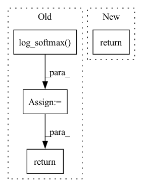

Pattern ID :12354
Before Change
self.confidence = 1 - smoothing
def forward(self, x, target):
log_probs = F.log_softmax( x) // [N, num_classes]
// target_index is used to get prob for each of the N samples
target_index = paddle.zeros([x.shape[0], 2], dtype="int64") // [N, 2]
target_index[:, 0] = paddle.arange(x.shape[0])
target_index[:, 1] = target
nll_loss = -log_probs.gather_nd(index=target_index) // index: [N]
smooth_loss = -log_probs.mean(axis=-1)
loss = self.confidence * nll_loss + self.smoothing * smooth_loss
return loss.mean()
class SoftTargetCrossEntropyLoss(nn.Layer):After Change
axis=self.axis,
use_softmax=self.use_softmax,
name=self.name)
return loss
class SoftTargetCrossEntropyLoss(nn.Layer):In pattern: SUPERPATTERN
Frequency: 5
Non-data size: 4
Instances Fragment ID: 41987544
Project Name: br-idl/paddlevit
Commit Name: f9d4bc1704951911df128d65faefaf70ba01ff84
Time: 2021-12-02
Author: RangeKingHZ@gmail.com
File Name: image_classification/DeiT/losses.py
M Class Name: LabelSmoothingCrossEntropyLoss
N Class Name: LabelSmoothingCrossEntropyLoss
M Method Name: forward(3)
N Method Name: forward(3)
M Parent Class: nn.Layer
N Parent Class: nn.Layer
M File Name: image_classification/DeiT/losses.py
N File Name: image_classification/DeiT/losses.py
M Start Line: 37
M End Line: 46
N Start Line: 56
N End Line: 67
Before Change
predictions = {}
if self.is_ctc_active(stage):
ctc_logits = self.modules.ctc_lin(encoded_signal)
predictions["ctc_logprobs"] = self.hparams.log_softmax( ctc_logits)
// TODO check if ctc_lin isn"t triggered twice ... if so, freeze & unfreeze it"s parameters?
(
predictions["tokens"],
_,
predictions["seq_logprobs"],
) = self.hparams.train_valid_test_search(encoded_signal, self.feat_lens)
return predictions
if __name__ == "__main__":After Change
)
pred["logp"], _ = batch_pad_right(pred["logp"])
return pred
def lm_compute_objectives(self, predictions, batch, stage): Fragment ID: 41987547
Project Name: speechbrain/speechbrain
Commit Name: b5f38186fb74dcaa91340e57b75e132073777e13
Time: 2023-01-12
Author: 2925439+anautsch@users.noreply.github.com
File Name: tests/templates/fetching_ddp_dynbatch_finetuning/finetune_LM.py
M Class Name: AnonimousClass
N Class Name: AnonimousClass
M Method Name: lm_compute_forward(3)
N Method Name: lm_compute_forward(3)
M Parent Class:
N Parent Class:
M File Name: tests/templates/fetching_ddp_dynbatch_finetuning/finetune_LM.py
N File Name: tests/templates/fetching_ddp_dynbatch_finetuning/finetune_LM.py
M Start Line: 49
M End Line: 69
N Start Line: 62
N End Line: 68
Before Change
// output layer for seq2seq log-probabilities
logits = self.modules.output(joint)
p_transducer = self.hparams.log_softmax( logits)
if stage == sb.Stage.VALID:
hyps, scores, _, _ = self.hparams.Greedysearcher(x)
return p_transducer, hyps
elif stage == sb.Stage.TEST:
(
best_hyps,
best_scores,
nbest_hyps,
nbest_scores,
) = self.hparams.Beamsearcher(x)
return p_transducer, best_hyps
return p_transducer
def compute_objectives(self, predictions, batch, stage):
"Given the network predictions and targets computed the loss."After Change
nbest_scores,
) = self.hparams.Beamsearcher(x)
return logits, best_hyps
return logits
def compute_objectives(self, predictions, batch, stage):
"Given the network predictions and targets computed the loss." Fragment ID: 41987548
Project Name: speechbrain/speechbrain
Commit Name: d0001d6bb579a41485dc5de7a00287ed1d849c8d
Time: 2022-04-10
Author: wahab.heba@gmail.com
File Name: recipes/TIMIT/ASR/transducer/train_wav2vec.py
M Class Name: ASR_Brain
N Class Name: ASR_Brain
M Method Name: compute_forward(3)
N Method Name: compute_forward(3)
M Parent Class: sb.Brain
N Parent Class: sb.Brain
M File Name: recipes/TIMIT/ASR/transducer/train_wav2vec.py
N File Name: recipes/TIMIT/ASR/transducer/train_wav2vec.py
M Start Line: 57
M End Line: 72
N Start Line: 57
N End Line: 71
Before Change
// output layer for seq2seq log-probabilities
logits = self.modules.output(joint)
p_transducer = self.hparams.log_softmax( logits)
if stage == sb.Stage.VALID:
hyps, scores, _, _ = self.hparams.Greedysearcher(x)
return p_transducer, hyps
elif stage == sb.Stage.TEST:
(
best_hyps,
best_scores,
nbest_hyps,
nbest_scores,
) = self.hparams.Beamsearcher(x)
return p_transducer, best_hyps
return p_transducer
def compute_objectives(self, predictions, batch, stage):
"Given the network predictions and targets computed the loss."After Change
nbest_scores,
) = self.hparams.Beamsearcher(x)
return logits, best_hyps
return logits
def compute_objectives(self, predictions, batch, stage):
"Given the network predictions and targets computed the loss." Fragment ID: 41987549
Project Name: speechbrain/speechbrain
Commit Name: d0001d6bb579a41485dc5de7a00287ed1d849c8d
Time: 2022-04-10
Author: wahab.heba@gmail.com
File Name: recipes/TIMIT/ASR/transducer/train.py
M Class Name: ASR_Brain
N Class Name: ASR_Brain
M Method Name: compute_forward(3)
N Method Name: compute_forward(3)
M Parent Class: sb.Brain
N Parent Class: sb.Brain
M File Name: recipes/TIMIT/ASR/transducer/train.py
N File Name: recipes/TIMIT/ASR/transducer/train.py
M Start Line: 66
M End Line: 81
N Start Line: 66
N End Line: 80
Before Change
y_in = prepend_bos_token(bpe, bos_index=params.bos_index)
logits = params.model(y_in, init_params=init_params)
pout = params.log_softmax( logits)
return pout
def compute_objectives(self, predictions, targets, stage="train"):
pout = predictionsAfter Change
tokens_bos = batch["tokens_bos"].to(self.device)
logits = self.hparams.model(tokens_bos)
pred = self.hparams.log_softmax(logits)
return pred
def compute_objectives(self, predictions, batch, stage):
Computes the loss given predictions and targets. Fragment ID: 41987550
Project Name: speechbrain/speechbrain
Commit Name: 37cd9e704357d544eb54e43ce4e4e86f96ac89a0
Time: 2021-01-10
Author: jzhong9@u.rochester.edu
File Name: recipes/LibriSpeech/LM/experiment.py
M Class Name: LM
N Class Name: LM
M Method Name: compute_forward(3)
N Method Name: compute_forward(4)
M Parent Class: sb.core.Brain
N Parent Class: sb.core.Brain
M File Name: recipes/LibriSpeech/LM/experiment.py
N File Name: recipes/LibriSpeech/LM/experiment.py
M Start Line: 47
M End Line: 58
N Start Line: 20
N End Line: 23